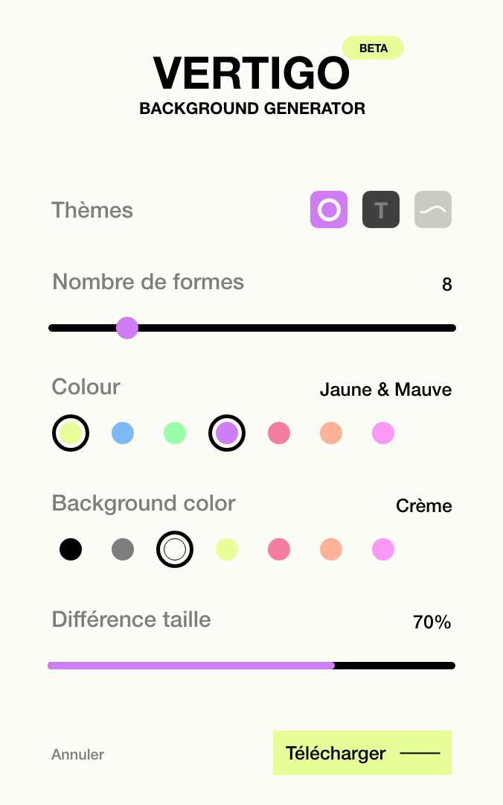
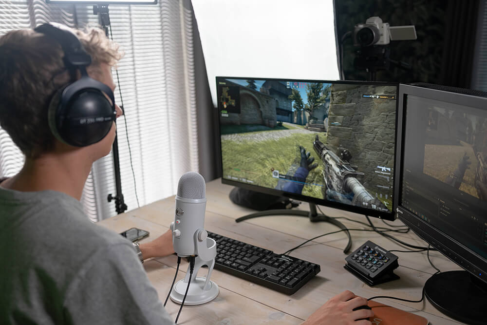
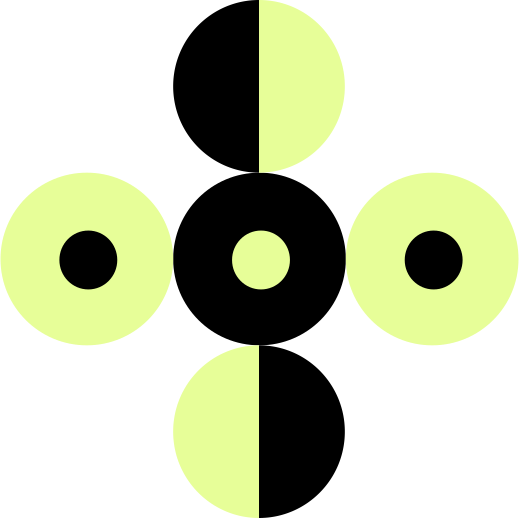

Révolutionner le streaming d’aujourd’hui.
Vertigo, c'est le nouveau logiciel destiné aux streamers, il leur permet de créer et de personnaliser leur décor mais il propose aussi plusieurs technologies afin que le décor réagisse avec le streameur ou la communauté.

Fonctionnalités
Une personnalisation complète. Un background comme personne.
Une interface vous sera proposer pour réaliser vos plus beaux background afin d’en mettre pleins la vue à vos nouveaux viewers.
Vertigo Vertigo Vertigo Vertigo Vertigo Vertigo
Vertigo Vertigo Vertigo Vertigo Vertigo Vertigo
Partenaires
Vertigo soutenue par les plus grands
Le projet Vertigo est soutenue par de grandes marques qui sont implantés depuis longtemps sur ce marché. Ils nous font confiance maintenant c’est à vous.

Technologie
Des technologies inovantes. Le futur derrière son écran.
Découvrez de nouvelles technologies comme nul part ailleurs. Un détection de l’humeur faciale, une interaction direct avec sa communauté et encore pleins d’autres.
